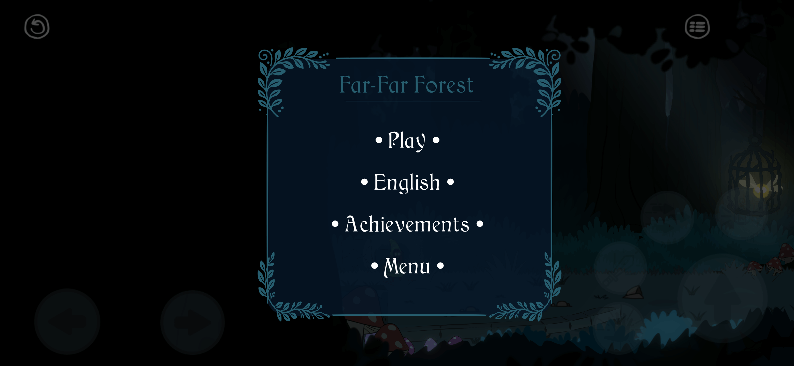
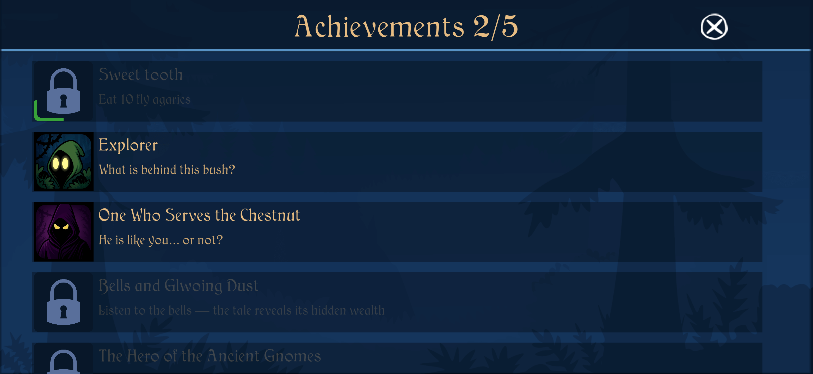

DevLog #1: Achievements
Reminder: you're reading a DevLog — thoughts and reflections from the developer of Lumen Grove. No AI or GMO — just hand-made.
Your game — your achievements. Sounds pretty good, doesn't it?
The decision to create my own achievement system, as I recall now, was spontaneous.
For some reason, I simply didn't like how the Play Market achievements looked — monotonous and dull.
Besides, it seemed like a pretty simple task that could be done quickly and would let me take a short break from level design to focus on something else.
And this time, the estimate was actually quite successful (which doesn't happen often, does it?).
So, what do we have now?

First of all, my own flexible system with two types of achievements: those that need to be accumulated to unlock and those that are granted immediately.
Pretty cute pop-ups and an overall design that fits well into the general atmosphere.

There was also an idea to make it so that when you unlock an achievement, you'd get a small piece of the world's lore.
Because believe me — there's a lot to tell!
But I couldn't find a convenient and intuitive way to do it.
I thought about adding it to the description, but you can read that even if you haven't earned the achievement, so that idea didn't work out.
A few words about the lore and the pain that comes with it.
I don't know how to tell it to you!
Or rather, I don't know how to do it in the way I intended.
Since this text is for the "chosen ones," those who are truly interested, I'll reveal a few cards (God, how the word "cards" sounds so vile in the context of recent events).
In Lumen Grove, full of wonders and magic, there once lived a King — the Wise Oak.
His reign was honest and just, yet, as it often happens, not everyone shared those virtues. Even in a fairy tale.
Deep in the woods, beneath the mountain, grew the one whose cunning and resentment put an end to the ancient order.
There is no more Oak — Chestnut now reigns. And those who could still defy his wicked will are no more.
Little fireflies, who once gave their light and strength to the Wise Ruler, now hide from the tyrant's minions — the forest shadows, echoes of a life long past. They are snatched into ancient lanterns and thrown without will under the roots of the Father of Thorny Fruits — the Great Chestnut.
How long does this silent oppression of Evil Will last? Yes, far too long.
Will it last forever? No, for a new Light has already been born that will overcome the Darkness.
This is just a part of the story that's bursting to come out, and I have to tell it to you somehow.
I don't want to do it "in your face," but I also don't want to hide it too much.
In any case, this was supposed to be a text about achievements, and I got a little carried away.
But what more can I say about them?
They're here.
I made them the way I saw it — and that's already cool.
Now I'm waiting for feedback.